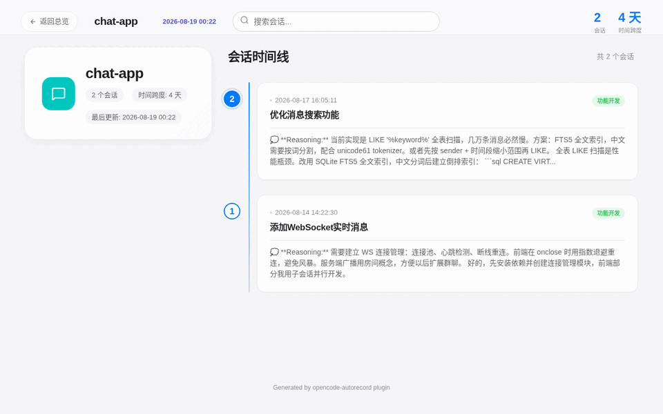
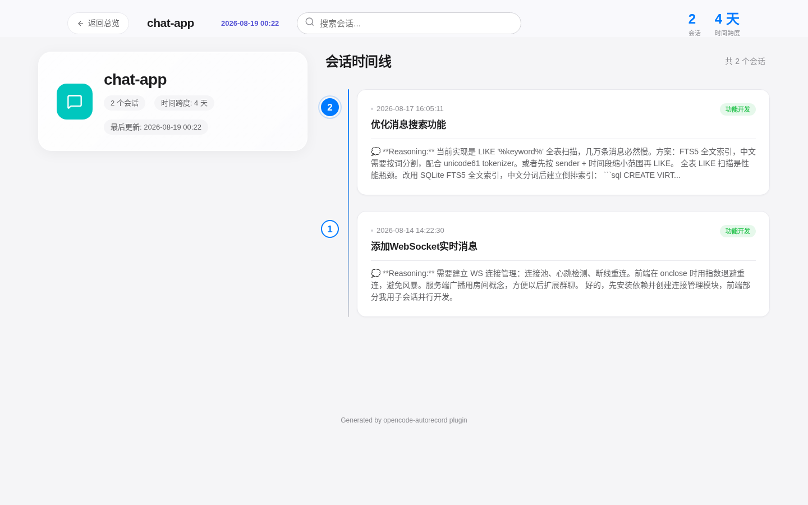
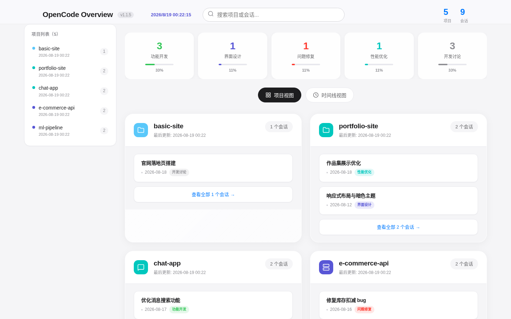

Auto-save on idle
Sessions are saved 2 seconds after going idle — silently, with no console output. Deleted or compacted sessions are flushed immediately.
Free & open source · OpenCode plugin
An OpenCode plugin that quietly archives every session to clean Markdown — images extracted, subagents inlined, HTML views generated. One line of config, zero noise.
"plugin": ["opencode-autorecord"]npx opencode-autorecord regenerate ~/opencode-autorecordEverything happens in the background — you just keep coding.
Sessions are saved 2 seconds after going idle — silently, with no console output. Deleted or compacted sessions are flushed immediately.
Child sessions (subagent tasks) are merged into the parent session's Markdown file — no scattered files, one complete record per conversation.
Base64 images are extracted and saved as standalone files with local paths — your Markdown stays clean and readable.
A metadata-only index page links to per-project pages with full conversations — dark code blocks, language labels, copy buttons, session modals.
A two-level index system (global + per-project) compares mtime and size — only changed projects are re-parsed, so regeneration is fast.
Every event error is caught and swallowed so the plugin never affects your other plugins. File locks prevent concurrent writes.
Records live in ~/opencode-autorecord/ — never in your project directory, never polluting your git history.
Files are named by timestamp and topic: YYYYMMDD-HH-MM-SS-topic.md. Full tool calls (inputs and outputs), reasoning steps, and Chinese/Unicode content are preserved.
~/opencode-autorecord/
├── projects/
│ └── my-project.html # full conversations
├── opencode-overview.html # metadata index
├── .autorecord-index.json # global index (v2)
└── my-project/
├── images/
│ └── 20250129-10-30-45-topic-0.png
└── 20250129-10-30-45-implement-auth.mdEvery session becomes a browsable record — click any session to open the full conversation.



No manual installation. OpenCode installs npm plugins automatically with Bun at startup.
Add one line to your project or user config. User-level config covers every project.
{ "plugin": ["opencode-autorecord"] }A file is created the moment a new conversation starts. Every idle event snapshots the full session.
~/opencode-autorecord/my-project/20260818-14-22-30-fix-bug.mdOpen the Markdown files, or regenerate the two-tier HTML views with one CLI command.
npx opencode-autorecord regenerate ~/opencode-autorecordNo. Once the plugin is listed in your opencode.json, OpenCode installs it automatically using Bun at startup (cached in ~/.cache/opencode/node_modules/).
In ~/opencode-autorecord/<project-name>/ — one folder per project, kept outside the project itself so your repo stays untouched.
On session idle after a 2s debounce, and immediately when a session is deleted or compacted. A message cache avoids re-fetching full history on every idle event.
Base64 images are extracted in parallel and saved as standalone files under an images/ directory, then replaced with local paths in the Markdown — keeping the files clean.
Child sessions are inlined inside the parent session's Markdown file under a "Child Sessions" section. They never create separate files.
No. All event-handling errors are caught and swallowed, file writes are protected by locks, and debounces keep IO minimal — the plugin is designed to be invisible.
Views regenerate automatically (10s debounce on the main session) and you can also regenerate manually anytime with opencode-autorecord regenerate ~/opencode-autorecord.
On Windows, ~ is NOT expanded in CLI paths — pass a full path like C:\Users\<username>\opencode-autorecord. User config lives at %USERPROFILE%\.config\opencode\opencode.json. Illegal filename characters (\ / : * ? " < > |) are auto-replaced with -, but reserved device names (CON, NUL, COM1, …) can't be used as filenames. OpenCode officially recommends running in WSL for the best experience.